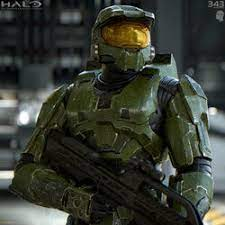
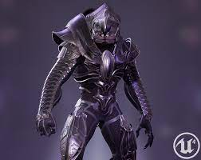

John (Redacted), otherwise known as Spartan 117 is a super-human soldier. After he foils the plan of an alien alliance (Covenant), he is congratulated. However, his mission is not over. The Covenant ambush Earth and he is the last chance for the human race. Things are dire for Spartan 117, but its about to get worse because he has new a mortal enemy.
Thel 'Vadamee is a disgrace to his alien race (Elites) and is branded the mark of a traitor. He suffers because of his defeat against Spartan 117. Despite this, he can still prove useful. He is given the role of Arbiter which serves as the puppet for the Prophets. He is tasked to defeat the Heritic revolution, but his focus is diverted when the most vile and powerful creatures rise again.
 | Category | | UNSC (Humans) | | Covenant (Aliens) | |
|---|---|---|
| Primary Weapon | | Assault Rifle | | Plasma Rifle |
| Side Arm | | Magnum | | Plasma Pistol | |
| Grenade | | Fragmentation | | Sticky | |
| Specialty | | SPNKR Rocket Launcher | | Energy Sword | |